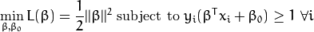
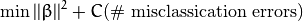
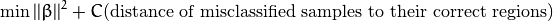
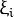
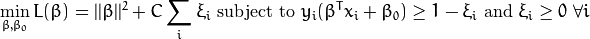

Support Vector Machines for Non-Linearly Separable Data¶
Goal¶
In this tutorial you will learn how to:
- Define the optimization problem for SVMs when it is not possible to separate linearly the training data.
- How to configure the parameters in CvSVMParams to adapt your SVM for this class of problems.
Motivation¶
Why is it interesting to extend the SVM optimation problem in order to handle non-linearly separable training data? Most of the applications in which SVMs are used in computer vision require a more powerful tool than a simple linear classifier. This stems from the fact that in these tasks the training data can be rarely separated using an hyperplane. Consider one of these tasks, for example, face detection. The training data in this case is composed by a set of images that are faces and another set of images that are non-faces (every other thing in the world except from faces). This training data is too complex so as to find a representation of each sample (feature vector) that could make the whole set of faces linearly separable from the whole set of non-faces.
Extension of the Optimization Problem¶
Remember that using SVMs we obtain a separating hyperplane. Therefore, since the training data is now non-linearly separable, we must admit that the hyperplane found will misclassify some of the samples. This misclassification is a new variable in the optimization that must be taken into account. The new model has to include both the old requirement of finding the hyperplane that gives the biggest margin and the new one of generalizing the training data correctly by not allowing too many classification errors. We start here from the formulation of the optimization problem of finding the hyperplane which maximizes the margin (this is explained in the previous tutorial):

There are multiple ways in which this model can be modified so it takes into account the misclassification errors. For example, one could think of minimizing the same quantity plus a constant times the number of misclassification errors in the training data, i.e.:

However, this one is not a very good solution since, among some other reasons, we do not distinguish between samples that are misclassified with a small distance to their appropriate decision region or samples that are not. Therefore, a better solution will take into account the distance of the misclassified samples to their correct decision regions, i.e.:

For each sample of the training data a new parameter  is defined. Each one of these parameters contains the distance from its corresponding training sample to their correct decision region. The following picture shows non-linearly separable training data from two classes, a separating hyperplane and the distances to their correct regions of the samples that are misclassified.

Note
Only the distances of the samples that are misclassified are shown in the picture. The distances of the rest of the samples are zero since they lay already in their correct decision region. The red and blue lines that appear on the picture are the margins to each one of the decision regions. It is very important to realize that each of the goes from a misclassified training sample to the margin of its appropriate region. Finally, the new formulation for the optimization problem is:

How should the parameter C be chosen? It is obvious that the answer to this question depends on how the training data is distributed. Although there is no general answer, it is useful to take into account these rules:
- Large values of C give solutions with less misclassification errors but a smaller margin. Consider that in this case it is expensive to make misclassification errors. Since the aim of the optimization is to minimize the argument, few misclassifications errors are allowed.
- Small values of C give solutions with bigger margin and more classification errors. In this case the minimization does not consider that much the term of the sum so it focuses more on finding a hyperplane with big margin.
Source Code¶
You may also find the source code and these video file in the samples/cpp/tutorial_code/gpu/non_linear_svms/non_linear_svms folder of the OpenCV source library or download it from here.
1 2 3 4 5 6 7 8 9 10 11 12 13 14 15 16 17 18 19 20 21 22 23 24 25 26 27 28 29 30 31 32 33 34 35 36 37 38 39 40 41 42 43 44 45 46 47 48 49 50 51 52 53 54 55 56 57 58 59 60 61 62 63 64 65 66 67 68 69 70 71 72 73 74 75 76 77 78 79 80 81 82 83 84 85 86 87 88 89 90 91 92 93 94 95 96 97 98 99 100 101 102 103 104 105 106 107 108 109 110 111 112 113 114 115 116 117 118 | #include <iostream>
#include <opencv2/core/core.hpp>
#include <opencv2/highgui/highgui.hpp>
#include <opencv2/ml/ml.hpp>
#define NTRAINING_SAMPLES 100 // Number of training samples per class
#define FRAC_LINEAR_SEP 0.9f // Fraction of samples which compose the linear separable part
using namespace cv;
using namespace std;
int main()
{
// Data for visual representation
const int WIDTH = 512, HEIGHT = 512;
Mat I = Mat::zeros(HEIGHT, WIDTH, CV_8UC3);
//--------------------- 1. Set up training data randomly ---------------------------------------
Mat trainData(2*NTRAINING_SAMPLES, 2, CV_32FC1);
Mat labels (2*NTRAINING_SAMPLES, 1, CV_32FC1);
RNG rng(100); // Random value generation class
// Set up the linearly separable part of the training data
int nLinearSamples = (int) (FRAC_LINEAR_SEP * NTRAINING_SAMPLES);
// Generate random points for the class 1
Mat trainClass = trainData.rowRange(0, nLinearSamples);
// The x coordinate of the points is in [0, 0.4)
Mat c = trainClass.colRange(0, 1);
rng.fill(c, RNG::UNIFORM, Scalar(1), Scalar(0.4 * WIDTH));
// The y coordinate of the points is in [0, 1)
c = trainClass.colRange(1,2);
rng.fill(c, RNG::UNIFORM, Scalar(1), Scalar(HEIGHT));
// Generate random points for the class 2
trainClass = trainData.rowRange(2*NTRAINING_SAMPLES-nLinearSamples, 2*NTRAINING_SAMPLES);
// The x coordinate of the points is in [0.6, 1]
c = trainClass.colRange(0 , 1);
rng.fill(c, RNG::UNIFORM, Scalar(0.6*WIDTH), Scalar(WIDTH));
// The y coordinate of the points is in [0, 1)
c = trainClass.colRange(1,2);
rng.fill(c, RNG::UNIFORM, Scalar(1), Scalar(HEIGHT));
//------------------ Set up the non-linearly separable part of the training data ---------------
// Generate random points for the classes 1 and 2
trainClass = trainData.rowRange( nLinearSamples, 2*NTRAINING_SAMPLES-nLinearSamples);
// The x coordinate of the points is in [0.4, 0.6)
c = trainClass.colRange(0,1);
rng.fill(c, RNG::UNIFORM, Scalar(0.4*WIDTH), Scalar(0.6*WIDTH));
// The y coordinate of the points is in [0, 1)
c = trainClass.colRange(1,2);
rng.fill(c, RNG::UNIFORM, Scalar(1), Scalar(HEIGHT));
//------------------------- Set up the labels for the classes ---------------------------------
labels.rowRange( 0, NTRAINING_SAMPLES).setTo(1); // Class 1
labels.rowRange(NTRAINING_SAMPLES, 2*NTRAINING_SAMPLES).setTo(2); // Class 2
//------------------------ 2. Set up the support vector machines parameters --------------------
CvSVMParams params;
params.svm_type = SVM::C_SVC;
params.C = 0.1;
params.kernel_type = SVM::LINEAR;
params.term_crit = TermCriteria(CV_TERMCRIT_ITER, (int)1e7, 1e-6);
//------------------------ 3. Train the svm ----------------------------------------------------
cout << "Starting training process" << endl;
CvSVM svm;
svm.train(trainData, labels, Mat(), Mat(), params);
cout << "Finished training process" << endl;
//------------------------ 4. Show the decision regions ----------------------------------------
Vec3b green(0,100,0), blue (100,0,0);
for (int i = 0; i < I.rows; ++i)
for (int j = 0; j < I.cols; ++j)
{
Mat sampleMat = (Mat_<float>(1,2) << i, j);
float response = svm.predict(sampleMat);
if (response == 1) I.at<Vec3b>(j, i) = green;
else if (response == 2) I.at<Vec3b>(j, i) = blue;
}
//----------------------- 5. Show the training data --------------------------------------------
int thick = -1;
int lineType = 8;
float px, py;
// Class 1
for (int i = 0; i < NTRAINING_SAMPLES; ++i)
{
px = trainData.at<float>(i,0);
py = trainData.at<float>(i,1);
circle(I, Point( (int) px, (int) py ), 3, Scalar(0, 255, 0), thick, lineType);
}
// Class 2
for (int i = NTRAINING_SAMPLES; i <2*NTRAINING_SAMPLES; ++i)
{
px = trainData.at<float>(i,0);
py = trainData.at<float>(i,1);
circle(I, Point( (int) px, (int) py ), 3, Scalar(255, 0, 0), thick, lineType);
}
//------------------------- 6. Show support vectors --------------------------------------------
thick = 2;
lineType = 8;
int x = svm.get_support_vector_count();
for (int i = 0; i < x; ++i)
{
const float* v = svm.get_support_vector(i);
circle( I, Point( (int) v[0], (int) v[1]), 6, Scalar(128, 128, 128), thick, lineType);
}
imwrite("result.png", I); // save the Image
imshow("SVM for Non-Linear Training Data", I); // show it to the user
waitKey(0);
}
|
Explanation¶
- Set up the training data
The training data of this exercise is formed by a set of labeled 2D-points that belong to one of two different classes. To make the exercise more appealing, the training data is generated randomly using a uniform probability density functions (PDFs). We have divided the generation of the training data into two main parts. In the first part we generate data for both classes that is linearly separable.
// Generate random points for the class 1 Mat trainClass = trainData.rowRange(0, nLinearSamples); // The x coordinate of the points is in [0, 0.4) Mat c = trainClass.colRange(0, 1); rng.fill(c, RNG::UNIFORM, Scalar(1), Scalar(0.4 * WIDTH)); // The y coordinate of the points is in [0, 1) c = trainClass.colRange(1,2); rng.fill(c, RNG::UNIFORM, Scalar(1), Scalar(HEIGHT)); // Generate random points for the class 2 trainClass = trainData.rowRange(2*NTRAINING_SAMPLES-nLinearSamples, 2*NTRAINING_SAMPLES); // The x coordinate of the points is in [0.6, 1] c = trainClass.colRange(0 , 1); rng.fill(c, RNG::UNIFORM, Scalar(0.6*WIDTH), Scalar(WIDTH)); // The y coordinate of the points is in [0, 1) c = trainClass.colRange(1,2); rng.fill(c, RNG::UNIFORM, Scalar(1), Scalar(HEIGHT));In the second part we create data for both classes that is non-linearly separable, data that overlaps.
// Generate random points for the classes 1 and 2 trainClass = trainData.rowRange( nLinearSamples, 2*NTRAINING_SAMPLES-nLinearSamples); // The x coordinate of the points is in [0.4, 0.6) c = trainClass.colRange(0,1); rng.fill(c, RNG::UNIFORM, Scalar(0.4*WIDTH), Scalar(0.6*WIDTH)); // The y coordinate of the points is in [0, 1) c = trainClass.colRange(1,2); rng.fill(c, RNG::UNIFORM, Scalar(1), Scalar(HEIGHT));
- Set up SVM’s parameters
See also
In the previous tutorial Introduction to Support Vector Machines there is an explanation of the atributes of the class CvSVMParams that we configure here before training the SVM.
CvSVMParams params; params.svm_type = SVM::C_SVC; params.C = 0.1; params.kernel_type = SVM::LINEAR; params.term_crit = TermCriteria(CV_TERMCRIT_ITER, (int)1e7, 1e-6);There are just two differences between the configuration we do here and the one that was done in the previous tutorial that we use as reference.
- CvSVM::C_SVC. We chose here a small value of this parameter in order not to punish too much the misclassification errors in the optimization. The idea of doing this stems from the will of obtaining a solution close to the one intuitively expected. However, we recommend to get a better insight of the problem by making adjustments to this parameter.
Note
Here there are just very few points in the overlapping region between classes, giving a smaller value to FRAC_LINEAR_SEP the density of points can be incremented and the impact of the parameter CvSVM::C_SVC explored deeply.
Termination Criteria of the algorithm. The maximum number of iterations has to be increased considerably in order to solve correctly a problem with non-linearly separable training data. In particular, we have increased in five orders of magnitude this value.
- Train the SVM
We call the method CvSVM::train to build the SVM model. Watch out that the training process may take a quite long time. Have patiance when your run the program.
CvSVM svm; svm.train(trainData, labels, Mat(), Mat(), params);
- Show the Decision Regions
The method CvSVM::predict is used to classify an input sample using a trained SVM. In this example we have used this method in order to color the space depending on the prediction done by the SVM. In other words, an image is traversed interpreting its pixels as points of the Cartesian plane. Each of the points is colored depending on the class predicted by the SVM; in dark green if it is the class with label 1 and in dark blue if it is the class with label 2.
Vec3b green(0,100,0), blue (100,0,0); for (int i = 0; i < I.rows; ++i) for (int j = 0; j < I.cols; ++j) { Mat sampleMat = (Mat_<float>(1,2) << i, j); float response = svm.predict(sampleMat); if (response == 1) I.at<Vec3b>(j, i) = green; else if (response == 2) I.at<Vec3b>(j, i) = blue; }
- Show the training data
The method circle is used to show the samples that compose the training data. The samples of the class labeled with 1 are shown in light green and in light blue the samples of the class labeled with 2.
int thick = -1; int lineType = 8; float px, py; // Class 1 for (int i = 0; i < NTRAINING_SAMPLES; ++i) { px = trainData.at<float>(i,0); py = trainData.at<float>(i,1); circle(I, Point( (int) px, (int) py ), 3, Scalar(0, 255, 0), thick, lineType); } // Class 2 for (int i = NTRAINING_SAMPLES; i <2*NTRAINING_SAMPLES; ++i) { px = trainData.at<float>(i,0); py = trainData.at<float>(i,1); circle(I, Point( (int) px, (int) py ), 3, Scalar(255, 0, 0), thick, lineType); }
- Support vectors
We use here a couple of methods to obtain information about the support vectors. The method CvSVM::get_support_vector_count outputs the total number of support vectors used in the problem and with the method CvSVM::get_support_vector we obtain each of the support vectors using an index. We have used this methods here to find the training examples that are support vectors and highlight them.
thick = 2; lineType = 8; int x = svm.get_support_vector_count(); for (int i = 0; i < x; ++i) { const float* v = svm.get_support_vector(i); circle( I, Point( (int) v[0], (int) v[1]), 6, Scalar(128, 128, 128), thick, lineType); }
Results¶
- The code opens an image and shows the training examples of both classes. The points of one class are represented with light green and light blue ones are used for the other class.
- The SVM is trained and used to classify all the pixels of the image. This results in a division of the image in a blue region and a green region. The boundary between both regions is the separating hyperplane. Since the training data is non-linearly separable, it can be seen that some of the examples of both classes are misclassified; some green points lay on the blue region and some blue points lay on the green one.
- Finally the support vectors are shown using gray rings around the training examples.

You may observe a runtime instance of this on the YouTube here.
Help and Feedback
You did not find what you were looking for?- Ask a question on the Q&A forum.
- If you think something is missing or wrong in the documentation, please file a bug report.